PHOTOSHOP
Photshopにて下記、画像加工を行いました。
- 合成
- 切り抜き
- 色調補正
- AIを使った背景の削除
制作期間:1週間
使用ツール
Photshop / ChatGPT・Gemini（before写真生成）
01合成
before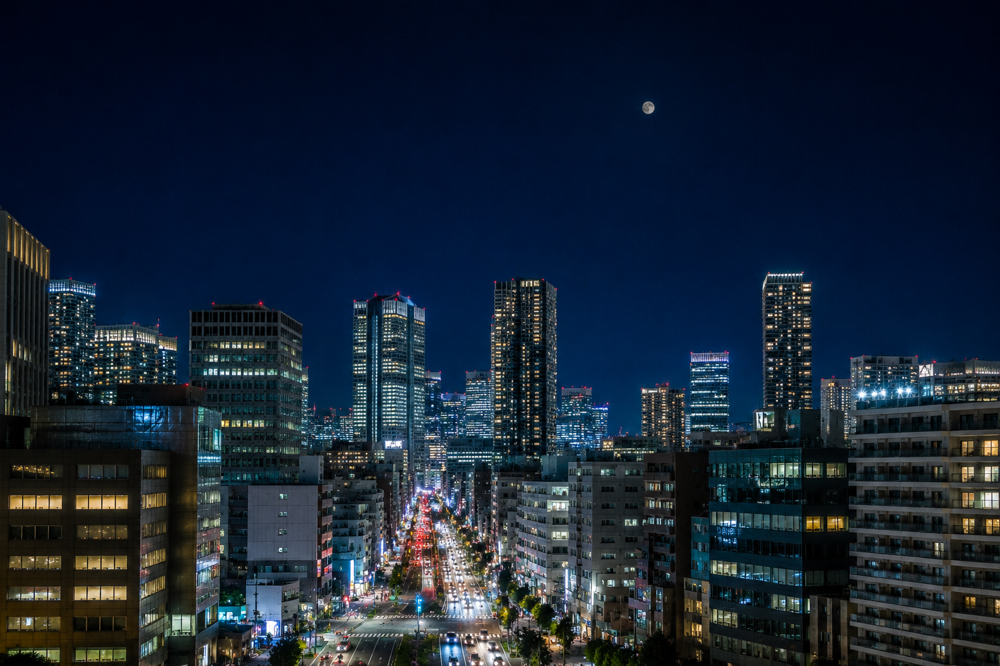
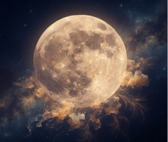
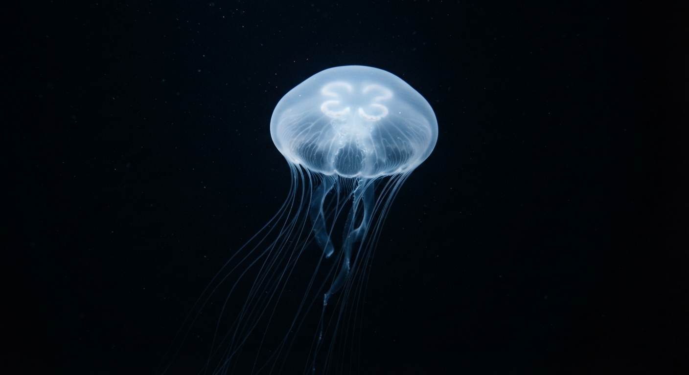
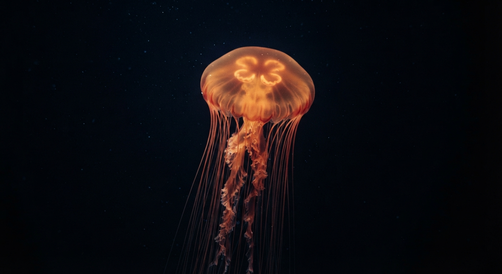
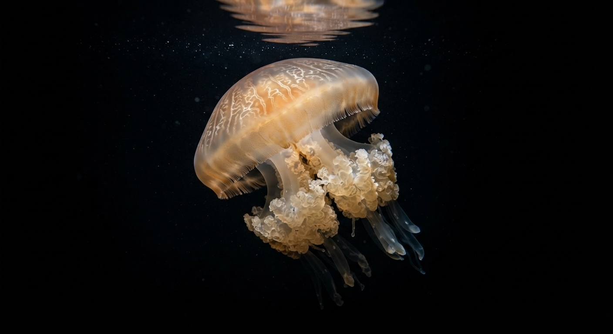
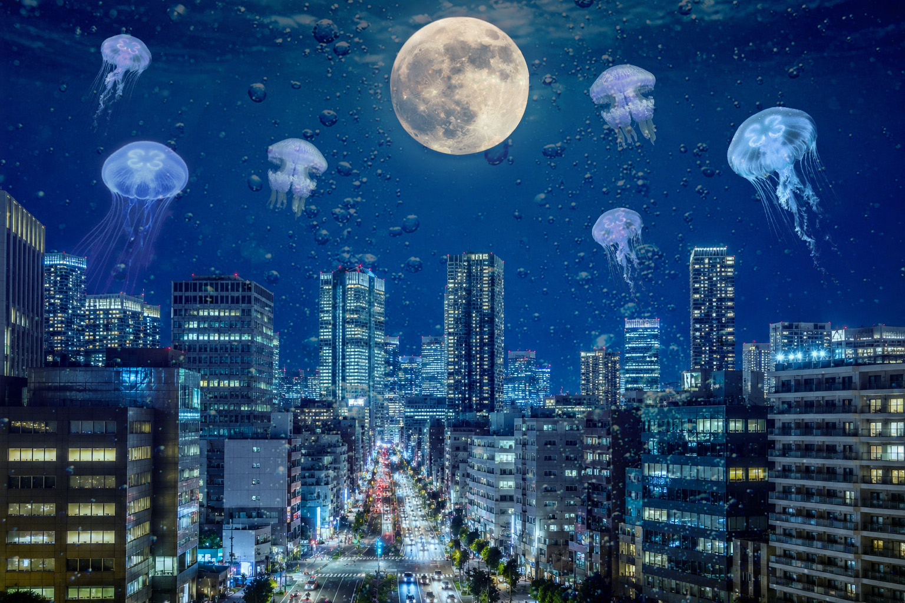
目的
夜景を海にみたてて、クラゲが泳いでいる幻想的な合成。合成と調和の技術を見せる目的で制作しました。
行った処理
クラゲは「色相・彩度」にて青に調整し、全体的にトーンを合わせ、泡の画像は不当明度を28％にし、描写を「ハードライト」にし、
月の画像は光彩をかけ、夜景と馴染むようにしました。
工夫した点
クラゲの存在感が強く、馴染みにくいため、不当明度を70～60％にし、ふわっとみせることで夜空と調和するよう工夫しました。
02切り抜き
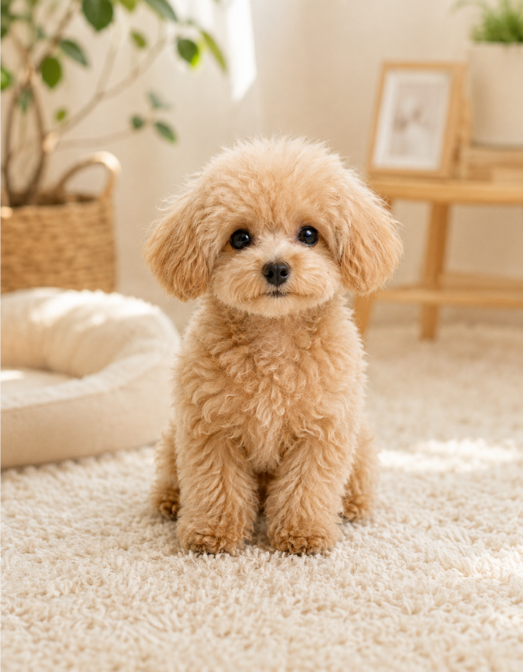
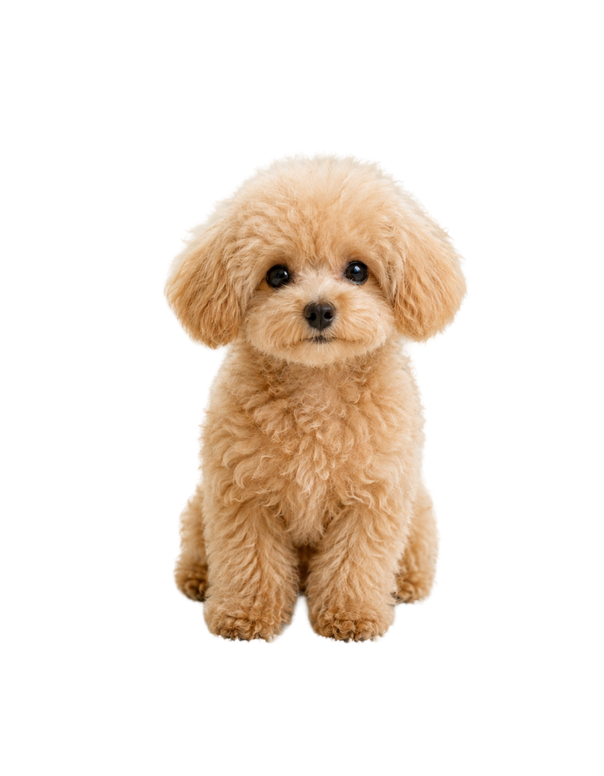
目的
細かい毛の部分まで切り抜いて透過pngにする。
行った処理
「選択とマスク」から「被写体を選択」で大まかに被写体を選択、「境界線調整ブラシ」で毛の境界線を調整後、レイヤーマスクで切り抜き。
工夫した点
レイヤーマスクで切り抜いた後、「砂漠の草」というブラシで、毛並みをさらに調整。下のレイヤーを真っ黒のべたぬりにし、毛の境界線がわかりやすいように作業しました。
03色調補正
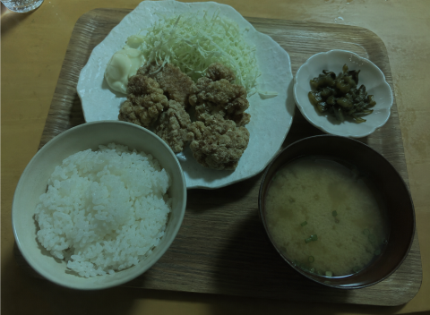
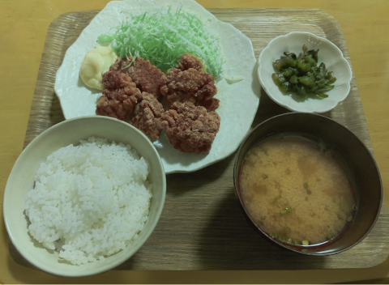
目的
色調補正を使って、料理をおいしそうに見せることが目的。
行った処理
「からあげ」「ごはん」「味噌汁」など、それぞれのおかずをオブジェクト選択ツールで選択。
マスクをかけ、それぞれにあったトーンカーブや色調補正をかけ、元の画像より美味しそうに見えるように加工しました。
工夫した点
加工すが強すぎると、加工感が出てしまうので、
加工感がでない自然な色見を意識しました。
before画像の左上の見切れたコップは、コピースタンプツールでテーブルをコピーし、コップを消してすっきりさせました。
04AIを使った背景の削除
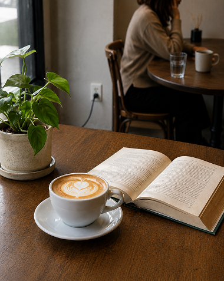
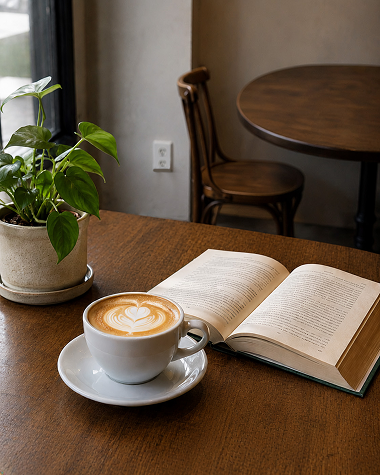
目的
Photshopに搭載されているAI機能「プロンプトで編集」機能を使って、背景の人物とコップを削除し、手前のコーヒーと本を目立たせる。
行った処理
「プロンプトで編集」機能にて、人物とコップを削除するプロンプトを入力し、背景画像の一部を消しました。
工夫した点
「背景を削除して」だけだと、テーブルや椅子が消えたり、目的とは違う結果がでるため「背景の座っている人物とテーブルの上のコップを削除して。
椅子やテーブルは残したままで」など細かく指定し、プロンプトを工夫しました。